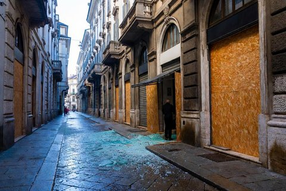

Politica italiana · 3 novembre 2026

La legge di bilancio proroga di tre mesi i paracadutisti in strada a Milano, con 6,1 milioni. Ma la misura che pesa davvero è un'altra: 600 carabinieri ausiliari nel 2027 e mille all'anno dal 2028.
di Franco Zanghì
Politica italiana · 3 novembre 2026

Il contributo non era mai partito, e adesso non partirà più: lo Stato rinuncia a 91,3 milioni l'anno. Ma dal 1° novembre vale in tutta l'Unione un contributo europeo dello stesso importo.
di Franco Zanghì
Politica italiana · 2 novembre 2026

Nel nuovo libro di Bruno Vespa la presidente del Consiglio esclude la corsa al Colle e chiede altri cinque anni a Palazzo Chigi. Ma difende l’idea che un conservatore possa salirvi, e parla di «razzismo culturale».
di Franco Zanghì
Politica italiana · 2 novembre 2026
Dal 2027 l’adeguamento automatico seguirà una media pesata sul numero dei dipendenti pubblici di ogni categoria, e senza gli arretrati dei contratti rinnovati in ritardo. L’Anm: le retribuzioni sono una garanzia di indipendenza.
di Franco Zanghì
Cronaca · 2 novembre 2026
Secondo l’accusa usavano profili social e chat per spingere altri alla violenza nelle piazze. Sequestrati undici telefoni, cinque repliche di pistole e un frangivetro. L’antiterrorismo verifica l’ipotesi di una regia.
di Franco Zanghì
Politica italiana · 1 novembre 2026

157 articoli e circa 26 miliardi di euro. Il taglio dell'Irpef vale al massimo 500 euro l'anno, il fondo per le uscite anticipate è di 850 milioni, ma chi potrà usarlo e a che età lo dovrà decidere il Parlamento.
di Franco Zanghì
Politica italiana · 1 novembre 2026

Il Movimento 5 stelle è passato dal 33 per cento del 2018 a circa il 12 di oggi, ma Conte è ancora al suo posto. Le primarie aperte a tutti rischiano di diventare un congresso del Partito democratico deciso da altri.
di Franco Zanghì
Sicilia · 1 novembre 2026
Sud chiama Nord ha un accordo nazionale con Fratelli d'Italia, ma Cateno De Luca annuncia in Sicilia un «governo di liberazione» con assessori del Pd e del M5s. Udc, Noi Moderati e Futuro Nazionale chiedono un chiarimento.
di Franco Zanghì
Politica italiana · 31 ottobre 2026
La frase è in un libro di Bruno Vespa anticipato dall'Ansa. Il leader di Futuro nazionale risponde che a 30 o 40 giorni dal voto la presidente del Consiglio prenderà le sue decisioni: un'attesa che somiglia a un avvertimento.
di Franco Zanghì
Politica italiana · 31 ottobre 2026
Una riunione a distanza fra Schlein, Conte, Bonelli e Fratoianni chiude con una nota firmata insieme. La data c'è, le regole no: non si sa chi vota, come si vota e chi si candida.
di Franco Zanghì
Politica italiana · 31 ottobre 2026
Simbolo nuovo con il suo nome, videomessaggio di Giorgia Meloni, obiettivo dichiarato il 3 per cento. In Sicilia, però, De Luca dice che per la Regione non chiede l'appoggio della coalizione.
di Franco Zanghì
Politica italiana · 31 ottobre 2026
La parola «vergognosa» di Giorgia Meloni non nasce dal nulla. Dieci mesi fa, in campagna referendaria, una ex magistrata oggi deputata della Lega raccontava dal palco che cosa leggeva nelle liste di posta delle correnti progressiste.
di Franco Zanghì
Sicilia · 30 ottobre 2026
I cento giorni dati al Consorzio per le autostrade siciliane sono scaduti il 26 ottobre senza le risposte attese. Intanto la Cgil chiede di sospendere il pedaggio dove si viaggia a 60 all'ora.
di Franco Zanghì
Politica italiana · 29 ottobre 2026
Dopo la scarcerazione di Youssef Siher la presidente del Consiglio ha parlato di decisione vergognosa. I vertici del tribunale hanno replicato per iscritto, senza mai nominarla, e il tono è salito da entrambe le parti.
di Franco Zanghì
Geopolitica · 29 ottobre 2026
La risoluzione che chiede agli Stati Uniti di togliere l'embargo passa da trentaquattro anni, ma i voti a favore sono crollati. Fra i paesi che non hanno votato con l'Avana c'è anche l'Italia, con la Germania e altri alleati.
di Franco Zanghì
Sicilia · 28 ottobre 2026
Il ministro per la Protezione civile vorrebbe Fontanarossa lontano dalla cenere dell'Etna. Ma la pista la stanno allungando dov'è, con un progetto da oltre trecento milioni approvato dalla giunta regionale che guidava lui.
di Franco Zanghì
Politica italiana · 27 ottobre 2026
Lo stesso indirizzo per centinaia di iscritti: a Sassari il partito di Vannacci lo ha contestato, a Civitanova Marche lo chiama procedura. Poi la Puglia e la Calabria. Un partito che non sa dire quanti iscritti ha, e le garanzie che restano.
di Franco Zanghì
Politica italiana · 27 ottobre 2026

Francesca Albanese accusa chi racconta le proteste di negare e deviare l'attenzione. Ma nel suo post mancano i saccheggi e i danni, e una risposta del Riformista la cita con una parola che non ha scritto.
di Franco Zanghì
Cronaca · 25 ottobre 2026
Youssef Siher, 30 anni, italiano di seconda generazione, è in carcere a Milano: la Procura lo indica come l'amministratore del Movimento 17 ottobre. Attorno al suo nome la politica discute di cittadinanza, e quasi nessuno è andato a leggere la norma.
di Franco Zanghì
Sicilia · 24 ottobre 2026
Depositate le ragioni per cui i due ricorsi contro le elezioni di Messina sono stati respinti. Sulle firme i giudici scrivono che la norma regionale parla di liste al plurale e non fissa alcun limite. Sulle dimissioni di Basile vale la legge siciliana, non quella dello Stato.
di Franco Zanghì
Politica italiana · 21 ottobre 2026
Il Consiglio dei ministri ha approvato d'urgenza un testo che tocca il codice penale, il processo minorile e il portafoglio dei genitori. La norma di cui si è discusso di più non c'è, e la pena più alta non ha fatto nessun titolo.
di Franco Zanghì
Politica italiana · 20 ottobre 2026
I bilanci del sindacato registrano 847.613 euro versati fra il 2019 e il 2024 all'Unione degli Universitari e alla Rete degli Studenti Medi. Pochi giorni prima dei cortei italiani, i dirigenti di quelle sigle indicavano come modello un paese dove bruciavano i licei.
di Franco Zanghì
Politica italiana · 12 ottobre 2026
Alla festa del Foglio, a Firenze, l'ex capo politico del Movimento 5 Stelle mette la coalizione davanti al primo voto europeo sugli aiuti militari a Kiev. Dal Movimento, finora, nessuna replica.
di Franco Zanghì
Politica italiana · 12 ottobre 2026
Conte chiede le primarie da settimane, Schlein sostiene che guida chi ha un voto in più. Dietro la contesa sul metodo ci sono i numeri delle due basi, e ciascuna vuole la regola che fa vincere il proprio leader.
di Franco Zanghì